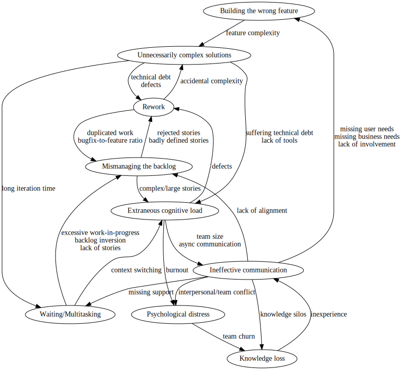

Notes on Software Development Waste
Henrique Carvalho Alves <hcarvalhoalves@gmail.com>
Table of Contents
1. Summary
Sedano et al (2017)[1] on "Software Development Waste" identified and describe that software projects manifest nine possible types of waste, in terms of loss of productivity and unnecessary friction.
These are my notes on the paper, where I summarize the waste taxonomy according to the paper, and speculate about possible relationships between the wastes and their causes.
2. Types and causes of waste [2]
| Waste | Building the wrong feature or product | Mismanaging the backlog | Rework | Unnecessarily complex solutions | Extraneous cognitive load | Psychological distress | Waiting/Multitasking | Knowledge loss | Ineffective communication |
| Definition | The cost of building a feature or product that does not address user or business needs. | The cost of duplicating work, expediting lower value user features, or delaying necessary bug fixes. | The cost of altering delivered work that should have been done correctly but was not. | The cost of creating a more complicated solution than necessary, a missed opportunity to simplify features, user interface, or code. | The costs of unneeded expenditure of mental energy. | The costs of burdening the team with unhelpful stress. | The cost of idle time, often hidden by multi-tasking. | The cost of re-acquiring information that the team once knew. | The cost of incomplete, incorrect, misleading, inefficient, or absent communication. |
| Causes | 1. User desiderata (not doing user research, validation, or testing; ignoring user feedback; working on low user value) | 1. Backlog inversion | 1. Technical debt | 1. Unnecessary feature complexity from the user’s perspective | 1. Suffering from technical debt | 1. Low team morale | 1. Slow tests or unreliable tests | 1. Team churn | 1. Team size is too large |
| 2. Business desiderata (not involving a business stakeholder; slow stakeholder feedback; unclear product priorities) | 2. Working on too many features simultaneously | 2. Rejected stories (e.g. product manager rejects story implementation) | 2. Unnecessary technical complexity (duplicating code, lack of interaction design reuse, overly complex technical design created up-front) | 2. Complex or large stories | 2. Rush mode | 2. Unreliable acceptance environment | 2. Knowledge silos | 2. Asynchronous communication (distributed teams; distributed stakeholders; dependency on another team; opaque processes outside team) | |
| 3. Duplicated work | 3. No clear definition of done (ambiguous stories; second guessing design mocks) | 3. Inefficient tools and problematic APIs, libraries, and frameworks | 3. Interpersonal or team conflict | 3. Missing information, people, or equipment | 3. Imbalance (dominating the conversation; not listening) | ||||
| 4. Not enough ready stories | 4. Defects (poor testing strategy; no root-cause analysis on bugs) | 4. Unnecessary context switching | 4. Context switching from delayed feedback | 4. Inefficient meetings (lack of focus; skipping retros; not discussing blockers each day; meetings running over (e.g. long stand-ups) | |||||
| 5. Imbalance of feature work and bug fixing | 5. Inefficient development flow | ||||||||
| 6. Delaying testing or critical bug fixing | 6. Poorly organized code | ||||||||
| 7. Capricious thrashing |
3. Possible Relationships

4. Sources
- Todd Sedano, Paul Ralph, and Cecile Peraire: "Software Development Waste". 2017 IEEE/ACM 39th International Conference on Software Engineering (ICSE), 10.1109/icse.2017.20. https://www.researchgate.net/publication/313360479_Software_Development_Waste
- Greg Wilson: "Software Development Waste". 2021-08-29 https://neverworkintheory.org/2021/08/29/software-development-waste.html